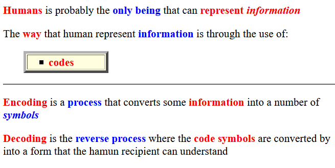
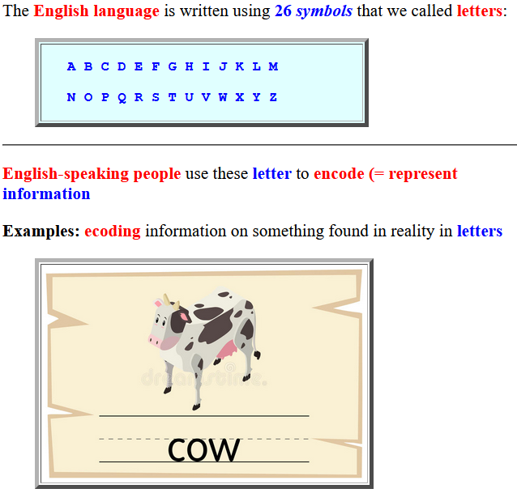
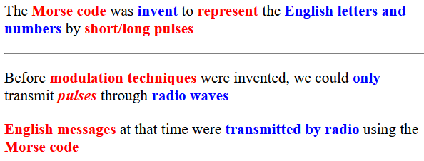
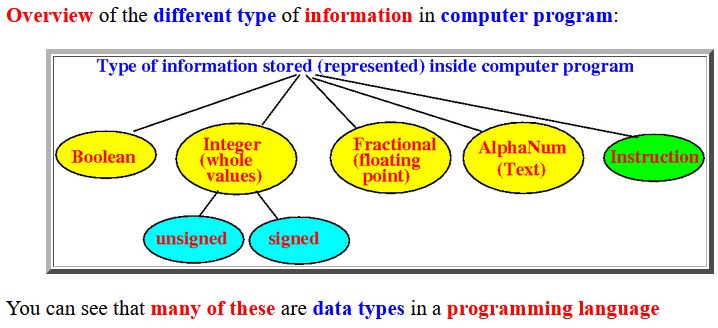
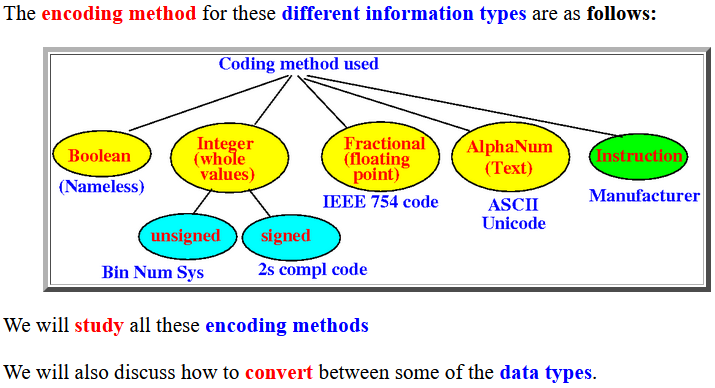

Intro to
information ecoding (representation)

See Wikipedia for
a definition of
code:
click here
Example of
information ecoding (representation)

A more "typical" code that people invent: Morse code

A more "typical" code that people invent: Morse code
The Morse code (table):
... --- ... = SOS (Save Our Souls)
Where do you find codes used inside a
computer program ?

Where do you find
codes
used inside a computer program ?

❮
❯